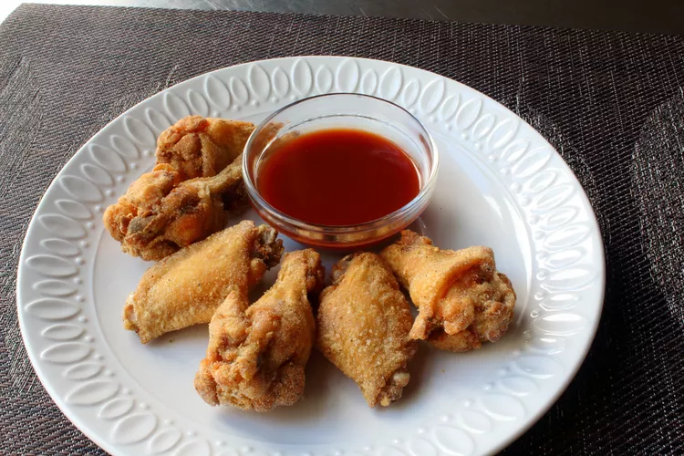

Rice Crispy Wings

Description
The rice flour coating on these wings turned out to be light, crispy, and extremely sauce friendly.
You can spice the flour any way you want!
Ingredients
- 1 pound chicken wing sections (flats and drums)
- 1 teaspoon kosher salt
- ½ teaspoon freshly ground black pepper
- ¼ teaspoon cayenne pepper
- ½ cup stone-ground rice flour
- 2 cups vegetable oil for frying, or as needed
Steps
- Place split chicken wings into a mixing bowl. Sprinkle with salt, black pepper, and cayenne pepper. Toss to evenly coat pieces. Cover with plastic wrap and refrigerate for at least 2 hours or overnight.
- Place rice flour in a shallow dish. Dredge chicken wing pieces in small batches in the flour and transfer to a plate. Arrange pieces so there is some space between them; allow wings to sit out for 15 minutes before frying.
- Line a baking sheet with paper towels; place a draining rack on the towels.
- Heat oil in a deep-fryer or large saucepan to 375 degrees F (190 degrees C). Transfer wings to oil; fry until inside is crispy and golden brown and chicken is cooked through, 10 to 12 minutes. An instant-read thermometer inserted near the bone should read 165 degrees F (74 degrees C).
- Remove wings from oil with a slotted spoon and drain on a rack placed over paper towels.